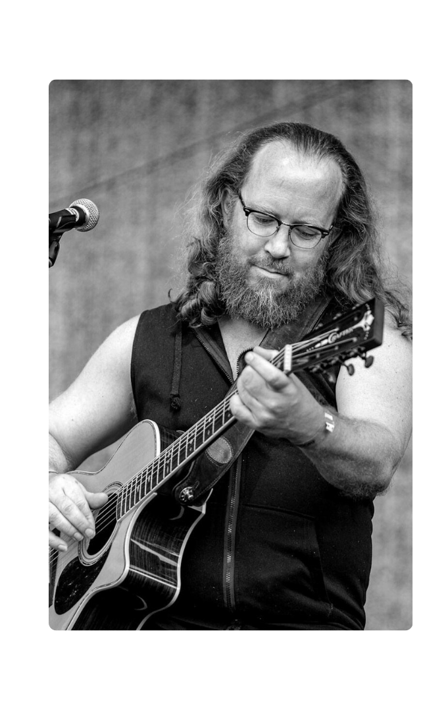
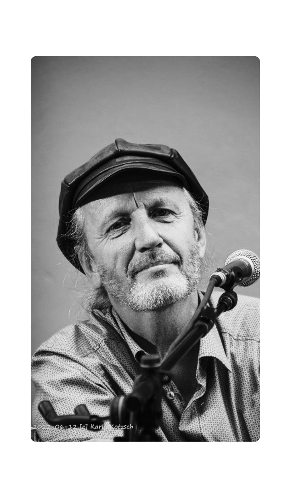

Stiller & Kotteck
Auf Gundermanns Wegen
Lieder von Gerhard Gundermann — erzählt
mit eigenen Stücken und Geschichten


Stiller & Kotteck
Lieder von Gerhard Gundermann — erzählt
mit eigenen Stücken und Geschichten
Axel Stiller und Uwe Kotteck verbindet eine langjährige Freundschaft, entstanden Anfang der 2000er bei Sessions im Gerücht in Dresden-Laubegast. Beide haben Gundis Lieder längst in ihre Soloprogramme aufgenommen — was lag da näher, als die Wege zu vereinen?
»Auf Gundermanns Wegen« vereint die Lieblingslieder von Gundi mit eigenen Stücken und Geschichten. Ohne festes Drehbuch — für uns spannend, für euch abwechslungsreich und amüsant.
Mehr über das DuoZwei Liedermacher aus Dresden, die seit über zwei Jahrzehnten gemeinsam auf Gundermanns Spuren unterwegs sind.
 Foto: Robert Meyer Photography
Foto: Robert Meyer Photography
Über 20 Jahre auf der Bühne. Gundermanns Lieder haben Axel zur deutschsprachigen Liedermacher-Musik gebracht — und über einige Umwege auch dorthin.
axelstiller.de Foto: Karla Kotzsch
Foto: Karla Kotzsch
Seit Jahren mit eigenen Liedern auf Bühnen des Landes unterwegs. Auch er interpretiert Gundis Lieder in seinen Soloprogrammen — die Partnerschaft mit Axel war nur eine Frage der Zeit.